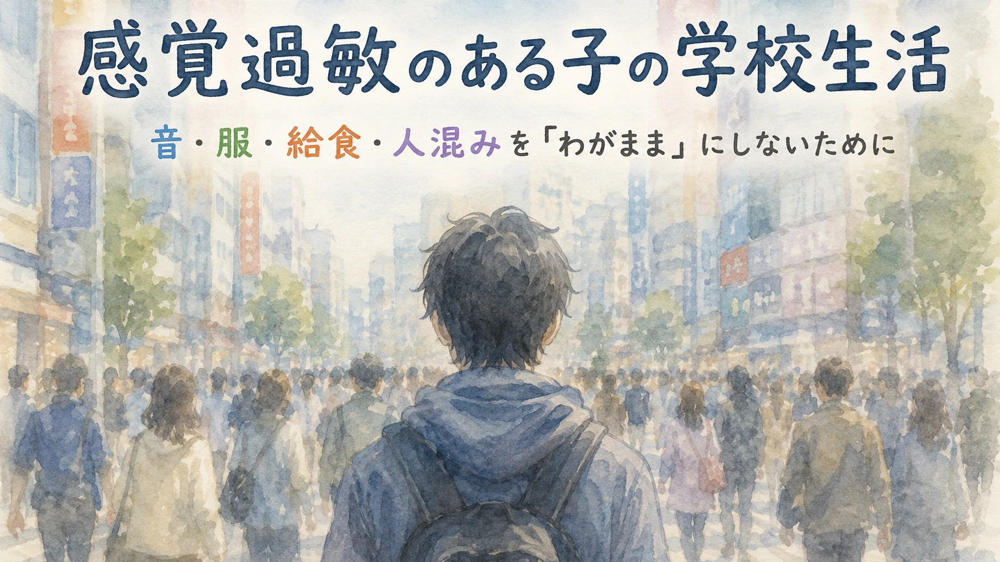

「うるさい」と言って耳をふさぐ。
服のタグや縫い目を嫌がる。
給食のにおいで気分が悪くなる。
体育館や集会に行きたがらない。
教室のざわざわで疲れ切ってしまう。
人混みの中で固まる。
チャイムや掃除機の音で泣き出す。
こうした姿を見ると、周囲の大人はつい思ってしまうことがあります。
「少し我慢すればいいのに」
「みんな同じ環境で頑張っているのに」
「苦手だから避けているだけでは」
「わがままなのでは」
もちろん、学校生活では、ある程度の集団参加や切り替えが必要です。
子どもが苦手なことを、すべて避ければよいという話でもありません。
ただし、感覚のつらさを「わがまま」や「甘え」と決めつけてしまうと、子どもの本当の困り感が見えにくくなります。
音、光、におい、味、服の感触、人との距離、空間のざわざわ。
そうした刺激を、ほかの子よりも強く、苦しく、逃げ場のないものとして感じている子がいます。
感覚の違いは、ASDのある子どもに見られることもあります。ASDの特性全体については、 ASD（自閉スペクトラム症）についての記事 でも整理しています。
この記事では、感覚過敏のある子の学校生活を、保護者や先生がどう理解し、どのように支援につなげていけばよいのかを整理します。
なお、この記事は診断や治療の判断をするものではありません。家庭や学校で見えている姿を、支援や相談につなげるための材料として整理することを目的にしています。
この記事で考えたいこと
感覚過敏のある子は、ただ「嫌がっている」のではないことがあります。
本人にとっては、音が痛い、光がまぶしすぎる、においで気持ちが悪くなる、服の感触がずっと気になる、という状態になっていることがあります。
大切なのは、子どもを「わがまま」と責めることでも、すべてを避けさせることでもありません。
その子が何に困っているのかを見つけ、参加しやすい条件を一緒に探すことです。
時間がない方は、ここから読めます
感覚過敏とは、「少し苦手」と同じではない
誰にでも、苦手な音やにおい、食べ物、服の感触はあります。
黒板をこする音が苦手。
強い香水が苦手。
特定の食感が苦手。
チクチクする服が気になる。
そういう経験は、多くの人にあります。
ただ、感覚過敏のある子の場合、その苦手さが学校生活に大きく影響することがあります。
授業に集中できない。
教室に入れない。
給食が食べられない。
体育館に行けない。
朝の支度で服を着るだけで大荒れになる。
帰宅後に疲れ切って動けなくなる。
このように、日常生活や学習参加に影響が出ている場合、それは単なる好みやわがままとして片づけにくいものです。
本人も、うまく説明できないことがあります。
「なんか嫌」
「無理」
「気持ち悪い」
「うるさい」
「痛い」
「行きたくない」
そういう言葉だけでは、大人には伝わりにくい。
けれど、その短い言葉の奥に、本人なりの強い不快感や不安が隠れていることがあります。
「慣れれば大丈夫」とは限らない
感覚のつらさに対して、大人はついこう言いたくなります。
「慣れれば大丈夫」
「少しずつ我慢しよう」
「みんなも同じだから」
「逃げてばかりでは困るよ」
もちろん、経験を重ねることで少しずつ慣れることもあります。
ただし、無理に慣れさせようとすると、かえって学校そのものがつらい場所になってしまうことがあります。
大切なのは、いきなり我慢させることではありません。
まず、何がつらいのかを見つける。
次に、負荷を少し下げる。
そのうえで、本人が参加しやすい形を探す。
この順番が大切です。
「慣れる」は、安心できる条件があって初めて起きることがあります。
安心がないまま我慢だけを求めると、子どもは学ぶどころではなくなります。
学校で起きやすい感覚のつらさ
感覚のつらさは、学校のいろいろな場面で出てきます。
大人から見ると小さなことでも、本人にとっては一日中続く負荷になっていることがあります。
1. 音のつらさ
学校は、音の多い場所です。
チャイム。
机や椅子を動かす音。
友達の話し声。
先生の大きな声。
校内放送。
体育館の反響。
音楽の授業。
運動会のピストルや笛。
掃除機や乾燥機の音。
給食時間の食器の音。
これらが重なると、耳をふさぐ、泣く、怒る、教室から出たくなる、固まるといった姿につながることがあります。
本人にとっては、「少しうるさい」ではなく、「頭の中がいっぱいになる」「音が刺さる」「逃げ場がない」と感じられている場合もあります。
2. 服や触覚のつらさ
服の感触も、学校生活に大きく影響します。
タグが痛い。
縫い目が気になる。
靴下のずれが耐えられない。
上履きの感触がつらい。
制服や体操服の素材が苦手。
マスクや帽子がつらい。
髪が首に触れるのが嫌。
汗で服が肌に貼りつくのが苦しい。
朝、服を着るところで荒れる子もいます。
登校前に毎日服で揉めると、保護者は疲れ切ってしまいます。
でも、本人にとっては「着たくない」のではなく、「着るとずっと不快が続く」状態かもしれません。
3. 給食のにおい・味・食感のつらさ
給食も、感覚のつらさが出やすい場面です。
においで気持ち悪くなる。
食感が苦手。
混ざった料理がつらい。
牛乳のにおいが苦手。
温かいものと冷たいものの差がつらい。
口の中に残る感じが嫌。
食器の音や周囲の食べる音が気になる。
偏食と言われることもあります。
もちろん、栄養や食経験は大切です。
ただ、感覚のつらさが強い子に対して、「好き嫌いをなくすために全部食べなさい」と押しすぎると、給食そのものが恐怖になることがあります。
給食は、食べる練習の場である前に、学校で安心して過ごす時間の一部です。
4. 光や視覚情報のつらさ
音や服ほど目立ちませんが、光や視覚情報の負荷もあります。
蛍光灯がまぶしい。
窓からの光がつらい。
掲示物が多すぎて落ち着かない。
教室の中に情報が多すぎる。
人の動きが気になって集中できない。
黒板やプリントが見づらい。
体育館や廊下の明るさがつらい。
本人は「まぶしい」「疲れる」としか言えないかもしれません。
でも、視覚情報が多すぎると、授業に集中する前に疲れてしまうことがあります。
5. 人混みや空間のつらさ
学校には、人が集まる場面がたくさんあります。
登校時の昇降口。
朝の教室。
休み時間の廊下。
集会。
給食当番。
体育館。
避難訓練。
行事の移動。
下校前のざわざわ。
人の声、動き、距離の近さ、空気の圧迫感。
それらが重なると、子どもによっては一気に疲れてしまいます。
大人から見ると「集団が苦手」に見えるかもしれません。
でも実際には、人が嫌なのではなく、感覚情報が多すぎて処理しきれない状態かもしれません。
感覚のつらさがあった日の帰宅後に大きく荒れる場合は、 「学校では大丈夫」なのに家で荒れる子の記事 も参考になります。
行動だけを見ると、誤解されやすい
感覚のつらさは、外から見えにくいものです。
そのため、子どもの行動だけが目立ちます。
耳をふさぐ。
教室から出る。
給食を残す。
体育館に入らない。
服を脱ぎたがる。
突然怒る。
泣く。
固まる。
友達を避ける。
「無理」と言って動かない。
こうした姿だけを見ると、次のように受け取られてしまうことがあります。
「反抗している」
「わがまま」
「集団行動ができない」
「好き嫌いが多い」
「こだわりが強すぎる」
でも、その行動は、本人にとっての「限界のサイン」かもしれません。
大切なのは、行動をすぐに直そうとする前に、何の刺激がつらかったのか、どの場面で起きやすいのか、何をすると少し楽になるのかを見ていくことです。
「避ける」だけでも、「我慢する」だけでもない
感覚過敏の支援では、二つの極端に寄りすぎないことが大切です。
一つは、すべて避けることです。
苦手な音があるから、全部参加しない。
給食がつらいから、食べる場面をすべて避ける。
体育館が苦手だから、行事は全部休む。
もちろん、本人の状態によっては、避けることが必要な時期もあります。
強い不安や身体症状がある場合、まず負荷を下げることは大切です。
ただ、ずっと避けるだけでは、参加の機会が狭くなってしまうこともあります。
もう一つは、すべて我慢させることです。
みんなと同じ場所にいる。
同じ音に耐える。
同じ服を着る。
同じ量を食べる。
同じ行事に同じ形で参加する。
これも、本人の負荷が大きすぎる場合は危険です。
大切なのは、避けるか我慢するかの二択ではありません。
その子が参加しやすい条件を探すことです。
耳を守りながら参加する。
席を調整する。
短時間だけ参加する。
休憩場所を用意する。
服の素材を相談する。
給食の量や食べ方を調整する。
事前に見通しを持てるようにする。
「みんなと同じ形」だけではなく、「その子が参加できる形」を考えてよいのです。
学校でできる小さな配慮
感覚のつらさに対する支援は、特別で大きなことばかりではありません。
小さな調整で、子どもの負荷が下がることがあります。
音への配慮
- 座席を音の少ない場所にする
- イヤーマフや耳栓を使えるようにする
- 校内放送やチャイムの前に予告する
- 体育館や集会では端の席にする
- 苦手な音が出る場面を事前に知らせる
- 音がつらいときに一時的に離れられる場所を決める
イヤーマフを使うことは、甘えではありません。
ただし、常に使えばよいというものでもありません。
本人が安心して参加するための道具として、どの場面で使うかを相談しておくことが大切です。
服や触覚への配慮
- タグを切る
- 肌着の素材を変える
- 靴下や上履きを本人に合うものにする
- 制服や体操服の着用について相談する
- 帽子やマスクが難しい場合は代替方法を考える
- 汗をかいたときに着替えられるようにする
「みんなと同じ服装」を大切にする場面もあります。
ただし、服の感触で一日中苦しんでいるなら、そこには調整の余地があります。
給食への配慮
- 食べられる量を相談する
- 苦手なにおいや食感を把握する
- 無理に完食を求めない
- 食べられるものから始める
- においが強い日は席や場所を調整する
- 給食時間の音やざわざわも確認する
偏食をすべてそのままにする、という話ではありません。
ただ、強い感覚のつらさがある場合、まずは「食べられる条件」を整えることが必要です。
光や視覚情報への配慮
- まぶしさの少ない席にする
- 掲示物の多い場所を避ける
- プリントの文字量を調整する
- 見る場所をはっきりさせる
- 余計な情報を隠す
- 黒板やスクリーンが見やすい位置を確認する
視覚情報が多すぎる子には、「何を見ればよいか」が分かるだけでも負荷が下がることがあります。
人混みや集団場面への配慮
- 集会では出入口に近い場所にする
- 移動のタイミングを少しずらす
- 休み時間の過ごし方を相談する
- 避難訓練や行事の流れを事前に伝える
- 途中で休める場所を決める
- 部分参加を認める
集団に慣れることは大切です。
ただし、いきなり集団の真ん中に入れるのではなく、安心できる位置や逃げ道を用意することで参加しやすくなる子もいます。
合理的配慮として相談できることがある
感覚のつらさによって、学校生活への参加が難しくなっている場合、合理的配慮として相談できることがあります。
合理的配慮の考え方や学校への伝え方については、 合理的配慮ってどう頼む？の記事 でも整理しています。
合理的配慮は、特別扱いではありません。
学びや活動に参加するうえで、障壁になっているものを減らすための調整です。
たとえば、次のようなことは相談の対象になり得ます。
- イヤーマフの使用
- 座席の調整
- 給食量や食べ方の相談
- 服装の調整
- 集会や行事の部分参加
- 休憩場所の確保
- 予定変更の事前説明
- 感覚的に負荷が高い場面での避難方法
大切なのは、「うちの子だけ特別にしてください」と伝えることではありません。
「この刺激があると参加が難しくなります」
「こういう条件があると参加しやすくなります」
「本人が学校生活に参加するために、どのような調整ができるか相談したいです」
このように伝えると、学校側も具体的に考えやすくなります。
学校に伝えるときのポイント
感覚のつらさは、学校では見えにくいことがあります。
子どもが学校で我慢している場合、先生には「できている」「問題ない」と見えることがあります。
家庭で大きく崩れていても、学校では分かりにくい。
だからこそ、保護者が伝えるときは、具体的に整理すると届きやすくなります。
「音が苦手です」だけではなく、
「体育館の集会のあと、帰宅後に泣いて動けなくなることがあります」
「給食が苦手です」だけではなく、
「カレーや魚の日のにおいで気持ち悪くなり、給食前から不安が強くなります」
「服を嫌がります」だけではなく、
「体操服の縫い目が気になり、朝の着替えで毎回大きく荒れます」
「人混みが苦手です」だけではなく、
「昇降口や移動の時間に固まりやすく、その後の授業に入りにくくなります」
このように、刺激、場面、反応、影響を分けて伝えると、学校側も支援を考えやすくなります。
相談するときのメモ例
つらそうにしている刺激
- チャイムや校内放送
- 体育館の反響
- 給食のにおい
- 服のタグや縫い目
- 靴下や上履きの感触
- 教室のざわざわ
- 集会や行事の人混み
- 強い光や掲示物の多さ
家庭で見えている様子
- 登校前に服で大きく荒れる
- 体育館のある日は朝から不安が強い
- 給食の話になると泣く
- 帰宅後に耳をふさいで横になる
- 集会や行事のあとに疲れ切っている
- 苦手な刺激があった日は宿題に向かえない
学校に相談したいこと
- 座席や参加場所を調整できるか
- イヤーマフや耳栓を使えるか
- 給食量や食べ方を相談できるか
- 服装について代替方法を考えられるか
- 集会や行事で部分参加や休憩場所を設定できるか
- 苦手な場面を事前に知らせてもらえるか
- 本人が困ったときに使える合図を決められるか
このように整理すると、相談が「苦手です」で終わらず、「どの場面で、どんな調整があると参加しやすいか」という話になりやすくなります。
家庭でできること
家庭でできることもあります。
ただし、保護者がすべてを背負う必要はありません。
家庭で大切なのは、子どもの感覚のつらさを観察し、学校に伝えられる形に整理することです。
つらい刺激を責めずに聞く
「なんでそんなことで嫌がるの」ではなく、次のように聞いてみます。
「何がつらかった？」
「音？におい？服の感じ？」
「どの場面が一番しんどかった？」
「どうすると少し楽だった？」
子どもがうまく言葉にできない場合は、大人が選択肢を出すと答えやすいことがあります。
体調や疲れとの関係を見る
感覚のつらさは、疲れている日や眠れていない日に強く出ることがあります。
昨日よく眠れたか。
行事が続いていないか。
給食や体育など、苦手な予定が重なっていないか。
帰宅後の疲れが強くないか。
感覚の問題だけでなく、疲労や不安と重なっている場合もあります。
苦手な刺激があった日の宿題で毎回荒れる場合は、 宿題で毎日荒れる子の記事 も参考になります。
「できた日」の条件を見る
うまくいかない日だけでなく、少し楽に過ごせた日も見てみます。
どんな席だったか。
どんな服だったか。
どんな予定だったか。
人が少なかったか。
事前に説明があったか。
休憩できたか。
「できた日」には、支援のヒントがあります。
相談してよい目安
「感覚のことくらいで相談していいのだろうか」そう迷う保護者は少なくありません。でも、次のような状態が続く場合は、学校や専門機関に相談してよいと思います。
- 登校前に毎日のように服や音で荒れる
- 特定の授業や行事の前に強い不安が出る
- 給食が大きな負担になっている
- 体育館、集会、音楽などを強く拒否する
- 苦手な刺激のあと、帰宅後に大きく崩れる
- 感覚のつらさで授業参加が難しくなっている
- 腹痛、頭痛、吐き気、不眠などが続く
- 学校に行きたがらなくなっている
- 家庭全体が疲れている
- 本人が「もう無理」「消えたい」などと言う
特に、身体症状が続く場合や、登校しぶり、自傷、強い不安が見られる場合は、家庭内の工夫だけで様子を見る段階を超えていることがあります。
学校、スクールカウンセラー、特別支援教育コーディネーター、医療機関、相談支援、自治体の相談窓口など、必要に応じてつながってください。
最後に――「わがまま」ではなく、参加の条件を探す
感覚過敏のある子の学校生活は、外からは分かりにくいものです。
音がつらい。
服がつらい。
においがつらい。
光がつらい。
人混みがつらい。
それは、周囲から見ると「そんなことで」と思われることがあります。
でも、本人にとっては、毎日の学校生活を左右する大きな負荷になっていることがあります。
大切なのは、子どもを「わがまま」と決めつけることではありません。
また、すべてを避けさせることでもありません。
その子が、どうすれば少し安心して学校生活に参加できるのか。
その条件を、家庭と学校で一緒に探していくことです。
感覚のつらさは、見えにくい困り感です。
だからこそ、家庭で見えている姿には意味があります。
「この子は何を嫌がっているのか」だけでなく、
「何がつらいのか」
「どんな条件なら参加しやすいのか」
「どこを調整すれば学校生活が少し楽になるのか」
そこから支援を考えてよいのだと思います。
相談前に整理したい方へ
感覚過敏のある子の学校生活では、家庭で見えている困り感が、学校では見えにくいことがあります。
まなびの森教育研究所では、診断や治療ではなく、学校や関係機関と話し合うための材料づくりを大切にしています。
「音やにおい、服の感触で毎日困っている」
「学校にどう伝えればよいか分からない」
「合理的配慮として何を相談できるのか整理したい」
「子どもの感覚のつらさを、支援につながる言葉にしたい」
そうしたときは、相談前のメモづくりから一緒に整理できます。
保護者向け相談ページを見る